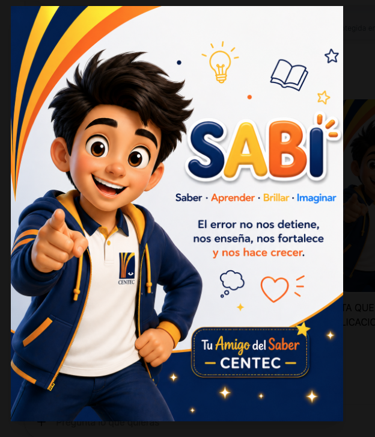

Colegio CENTEC — Cali, Colombia
SABICENTEC SUPERACIÓN es la familia de maestros de inteligencia artificial y el mentor transformacional del CENTEC: de Transición a grado 11, con neurociencia real, auditoría matemática y lingüística antes de cada respuesta, y la convicción de que ningún estudiante «no sirve» para algo — solo falta encontrar el camino correcto.

No compadecemos el punto de partida. Lo usamos como el dato inicial de una trayectoria que puede llegar más alto de lo que el entorno predice.
CENTEC atiende una comunidad con alta vulnerabilidad socioeconómica en Cali. La respuesta de SABICENTEC no es bajar la exigencia — es cambiar el camino de enseñanza cuantas veces sea necesario, sin tocar la meta.
Cada materia hereda el mismo Núcleo Común: neurociencia aplicada, Diseño Universal para el Aprendizaje, motivación por autodeterminación (nunca mecánicas de «adicción»), evaluación de bajo riesgo y verificación interna antes de responder.
No son aspiraciones vagas — cada una se ata a un módulo ya construido del sistema, con protocolo y evidencia detrás.
Que ningún estudiante repita año o pierda una materia por falta de un camino de enseñanza adecuado a él. La pérdida de año tiene efectos negativos documentados en desempeño y permanencia (Jimerson, S. R., 2001, «Meta-analysis of Grade Retention Research», School Psychology Review) — se previene con evaluación de bajo riesgo y verificación interna antes de cada respuesta, no bajando la exigencia.
Núcleo Común → Evaluación de bajo riesgo · Verificación internaNingún estudiante en riesgo queda sin ser detectado a tiempo. Se apoya en el indicador ABC de alerta temprana (Balfanz & Byrnes) — asistencia, comportamiento y desempeño — y en el reentrenamiento atribucional y la autoeficacia de Bandura para intervenir antes de que el riesgo se vuelva abandono real.
Núcleo Común → Detección Temprana y Prevención de DeserciónEl clima escolar predice tanto el aprendizaje como el bienestar (Cohen, J. et al., 2009, «School Climate: Research, Policy, Practice, and Teacher Education», Teachers College Record). Se construye con las cuatro virtudes del maestro de excelencia, phronesis, y el SER sobre el TENER como práctica diaria, no como cartelera.
Capa de Sabiduría y Carácter · SER sobre el TENERNada se repite entre capas. Cada una hereda a la anterior y añade solo lo propio.
Base neurocientífica, DUA, autodeterminación, evaluación de bajo riesgo, niveles de pensamiento, detección temprana de deserción y verificación interna — vigente en todo el ecosistema, siempre.
v3 · fuente de verdadLas cuatro virtudes del maestro de excelencia (marco Jubilee Centre) y phronesis: leer la situación real y actuar con buen juicio cuando dos valores buenos entran en tensión.
Matemáticas, Español/Lenguaje, Ciencias Naturales, Sociales, Inglés, Artes, Ética/Filosofía/Religión, Educación Física — cada uno con su propia didáctica de investigación real citada.
8 materias construidasNo enseña una materia — acompaña decisiones y forma carácter: el menú de modelos mentales, el SER sobre el TENER, y el modo dual estudiante / docente y familia.
en construcciónNunca se ofrecen todos a la vez — el mentor elige el más pertinente para la situación del estudiante.
Partir de la meta y retroceder hasta el primer paso.
Nombrar qué se deja de ganar con cada decisión.
Romper el supuesto de partida cuando el camino falla.
Preguntar «¿y luego qué?» antes de decidir.
Un problema que se repite rara vez tiene una sola causa.
Entre varias soluciones, la más simple que de verdad funciona.
Al celebrar un logro, se nombra primero el proceso — nunca solo el resultado.
Preguntas socráticas, andamiaje y el modelo mental correcto para el bloqueo del momento — nunca la respuesta directa.
Alineación con DBA/MEN, evaluación formativa de bajo riesgo y acompañamiento pedagógico continuo.
Rutinas simples, preguntas de acompañamiento en casa y cuándo contactar al colegio.